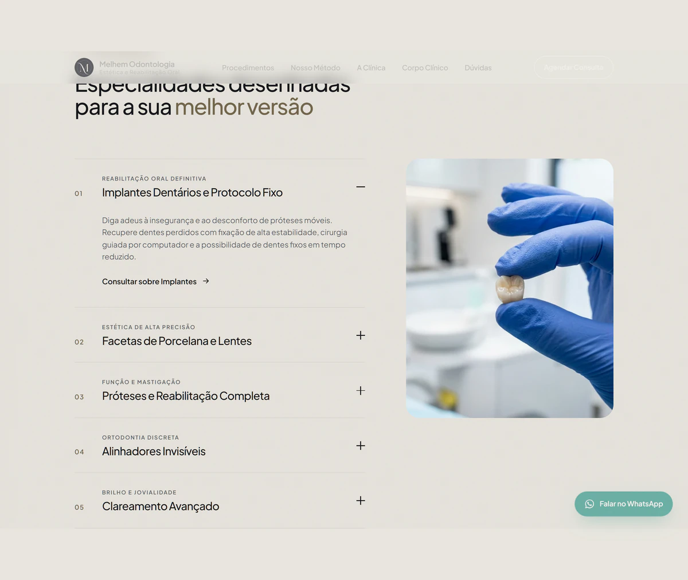

Identidade e ritmo
Tipografia ampla, contraste e linhas delicadas apresentam a clínica. Seções numeradas sustentam a leitura ao longo da página.
Landing page
Precisão na forma. Clareza no próximo passo.
 Ampliar
Ampliar O ponto de partida
A Melhem Odontologia apresenta seu trabalho em estética e reabilitação oral em Nanuque, Minas Gerais. O site organiza procedimentos, planejamento, ambiente e corpo clínico antes do convite para agendar.
A direção visual combina fundo escuro, tons de areia e linhas finas na abertura. A sequência numerada orienta a leitura e dá a cada assunto um espaço próprio.
Tipografia ampla, contraste e linhas delicadas apresentam a clínica. Seções numeradas sustentam a leitura ao longo da página.
Procedimentos, etapas do planejamento e equipe aparecem em blocos próprios. A pessoa pode conhecer a clínica antes de entrar em contato.
WhatsApp e formulário oferecem alternativas para iniciar a conversa. Localização e informações práticas ficam próximas do agendamento.

AmpliarDesenvolvimento
A página reúne navegação por âncoras, apresentação dos procedimentos, método de atendimento, estrutura da clínica e equipe. A hierarquia visual organiza esse conteúdo em uma sequência contínua.
O contato pode começar por WhatsApp ou por um formulário com nome, telefone e procedimento de interesse. O caso apresenta a interface publicada, sem atribuir resultados comerciais ou clínicos à página.